Type of information filtering system designed to predict and suggest items or content that a user is likely to be interested in or prefer
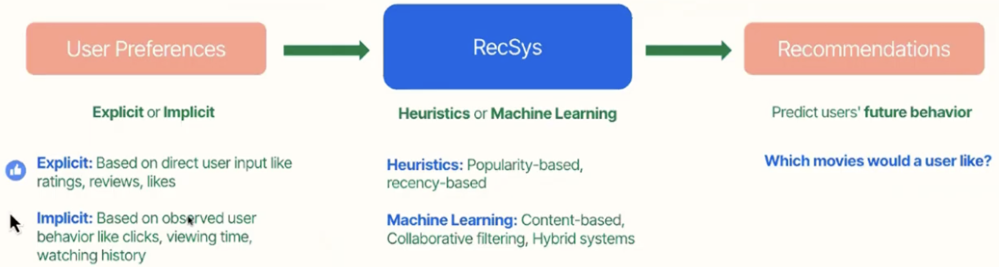
Why Do We Need Recommendation Systems?
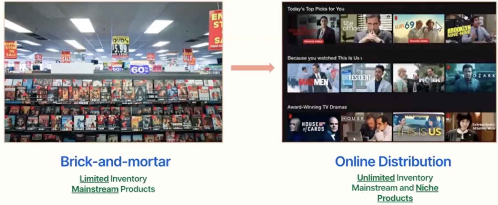
The Long Tail
The Long Tail refers to the less popular, niche products that collectively can drive significant business when aggregated.
Recommendation system facilitates discovery of long-tail items by providing personalized suggestions based on user preferences, behavior, or collaborative filtering
They help users navigate through the vast array of choices, making niche products more visible and accessible
The Tasting Booth Experiment: Setup
The Tasting Booth Experiment also known as the “Jam Experiment”, was a study conducted by psychologists Sheena Iyengar and Mark Lepper to investigate the effect of choice on consumer behavior
The experiment took place in a gourmet shop near the Stanford University campus in Menlo Park, California
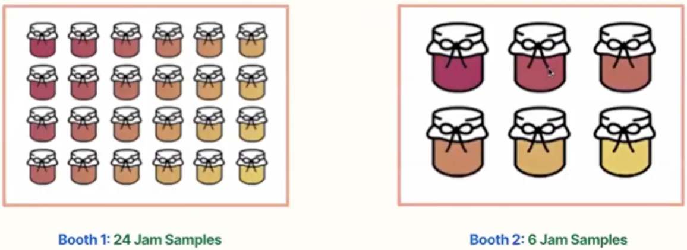
The Tasting Booth Experiment: Findings
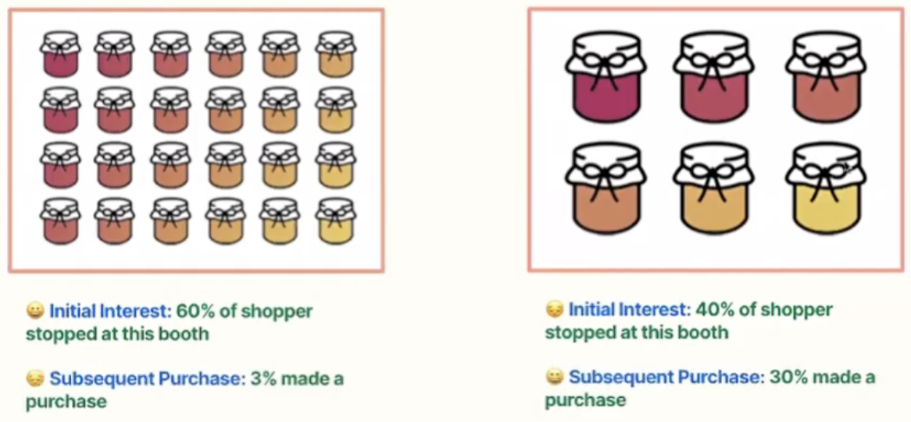
The Tasting Booth Experiment: Implications
For Online Business
Recommendation systems can improve customer satisfaction and increase conversion rates by simplifying the decision-making process
By recommending a limited set of items based on user preferences or previous behavior, these systems can guide users towards a decision more effectively
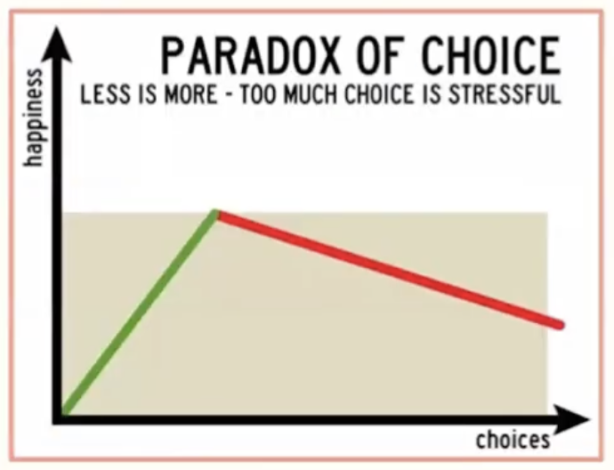
Brief History of Recommendation System
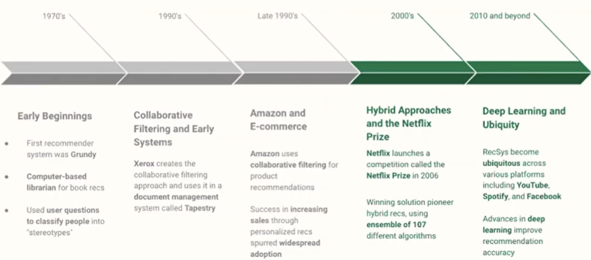
Recommendation System Approaches
Heuristic-based: Uses predefined rules and business logic to make straightforward recommendations based
Content-based: Recommends items similar to what users previously liked by analyzing item features and characteristics
Collaborative Filtering: Suggests items based on preferences of users with similar taste patterns and behaviors
Hybrid recommenders: Combines multiple recommendation approaches to leverage the strengths of each method
Input Data
Explicit Data
Implicit Data
Data where we have some sort of rating, like the 1 to 5 ratings from the MovieLens or Netflix dataset
Data we gather from the users behavior, with no ratings or specific actions needed as how many times they played a song or watched a movie
The data is hard to come by as users might not spend the time to rate items or it might not be applicable
It is lot more available compared to explicit data, but tends to be more noisy
Heuristic-Based
Uses predefined rules and business logic to make straightforward recommendations based on user behavior patterns
Popularity-based: Recommed the most popular items to the user
Pros: Simple to set-up, requiring only basic metrics like sales or views, making them quick to deploy
Cons: Recommendations do not reflect individual preferences, potentially leading to irrelevant suggestions
Popularity-Based
How do we account for the # of reviews?
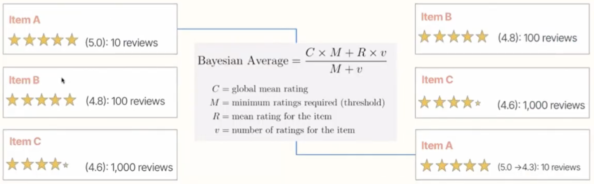
Content-Based Filtering
Uses item features to recommend other items similar to what the users likes, based on their previous actions or explicit feedback
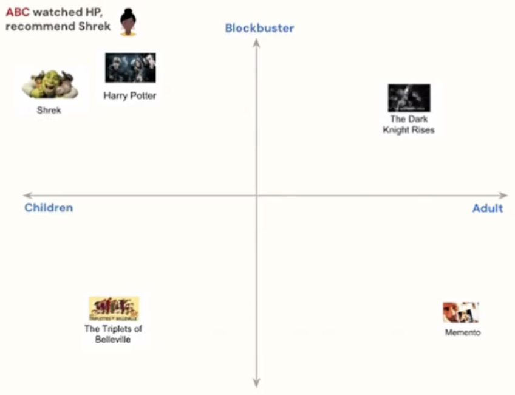
Places items on a n-dimensional space based on certain features. If a user has a high interaction with on item, recommends the ‘nearest’ item
Major Limitations
Feature Representations near to be hand-engineered which is often difficult
The model can only make recommendations based on existing interests of the user. In other words, the model has limited ability to expand on the users’ existing interests
Collaborative Filtering
Collaborative filtering uses similarities between users and items simultaneously to provide recommendations
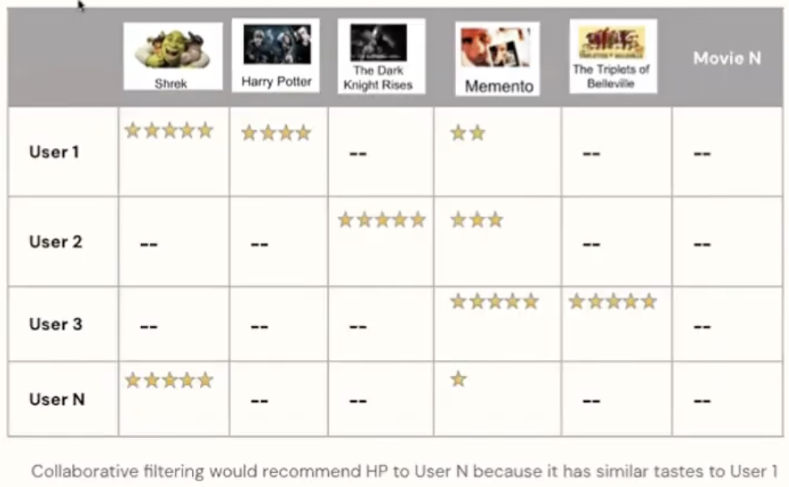
Collaborative filtering models can recommend item to user A based on interests of a similar user B
Advantages
Embeddings can be learned automatically, without relying on hand-engineering of features
Training data consists of a feedback matrix
Each row represents a user
Each column represents an item (a movie)
How Collaborative Filtering Works?
Matrix Factorization Algorithm
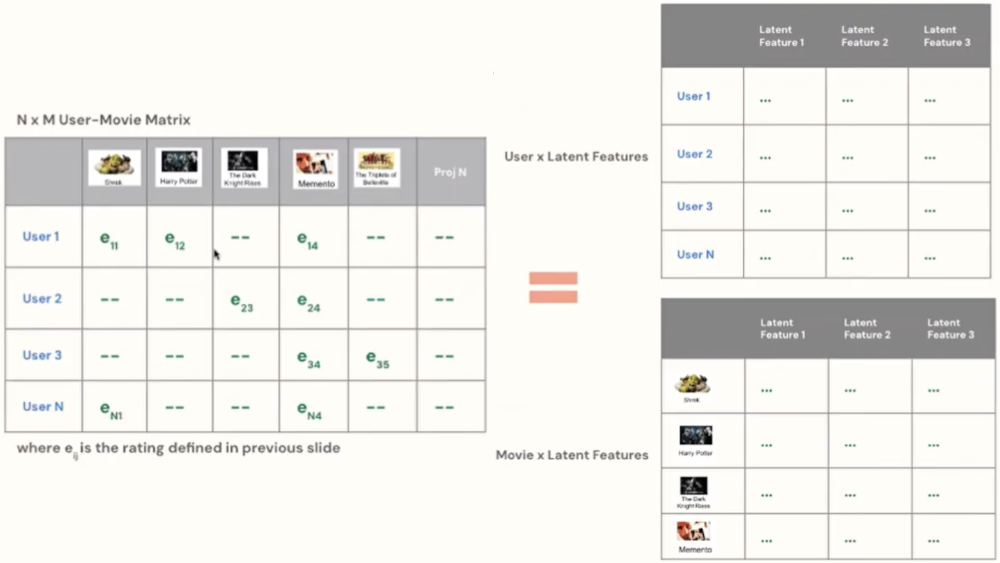
Hybrid Recommenders
Two-tower neural networks
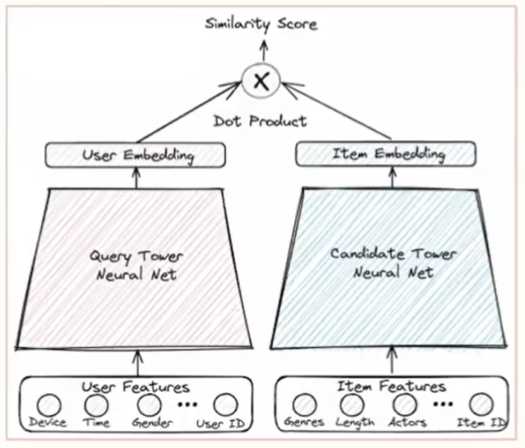
Two-tower neural networks are one of the most popular forms of hybrid recommenders
Query Tower: Encodes search queries and user profiles into query embeddings
Candidate Tower: Encodes the item, store, location, and other relevant features into item embeddings
The final prediction is the dot product of the outputs of user and item towers